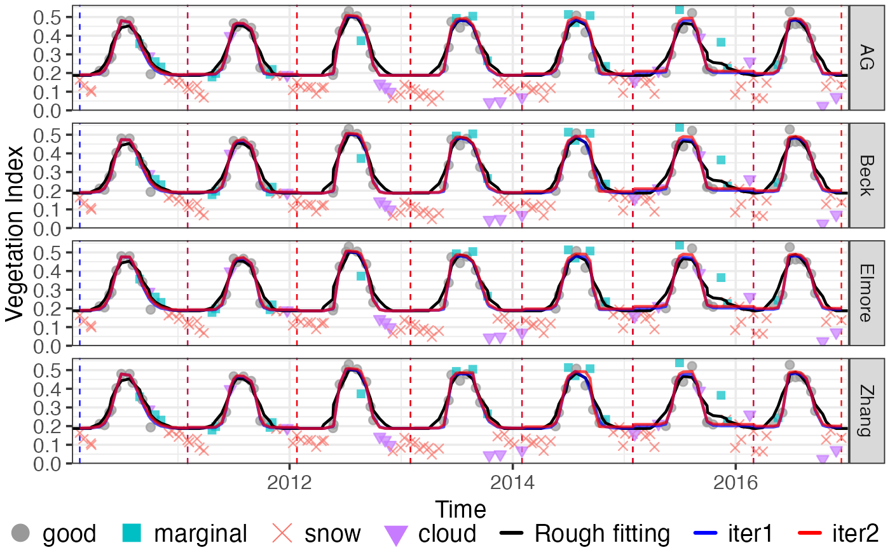

Fine Curve fitting for INPUT time-series.
curvefits(INPUT, brks, options = list(), ...)A list object with the elements of 't', 'y', 'w', 'Tn' (optional)
and 'ylu', returned by check_input.
A list object with the elements of 'fit' and 'dt', returned by
season or season_mov, which contains the growing season
dividing information.
methods (default c('AG', 'Beck', 'Elmore', 'Zhang')``): Fine curve fitting methods, can be one or more of c('AG', 'Beck', 'Elmore', 'Zhang', 'Gu', 'Klos')`. Note that 'Gu' and 'Klos'
are very slow.
wFUN (default wTSM): Character or function, weights updating function
of fine fitting function.
iters (default 2): max iterations of fine fitting.
wmin (default 0.1): min weights in the weights updating procedure.
use.rough (default FALSE): Whether to use rough fitting smoothed time-series as input?
If false, smoothed VI by rough fitting will be used for Phenological metrics
extraction; If true, original input y will be used (rough fitting is used
to divide growing seasons and update weights.
use.y0 (default TRUE): boolean. whether to use original y0 as the input of plot_input,
note that not for curve fitting. y0 is the original value before the process
of check_input.
nextend (default 2): Extend curve fitting window, until nextend good or
marginal element are found in previous and subsequent growing season.
maxExtendMonth (default 1): Search good or marginal good values in previous and
subsequent maxExtendMonth period.
minExtendMonth (default 0.5): Extending perid defined by nextend and maxExtendMonth,
should be no shorter than minExtendMonth.
When all points of the input time-series are good value, then the extending
period will be too short. In that situation, we can't make sure the connection
between different growing seasons is smoothing.
minPercValid: (default 0, not use). If the percentage of good
and marginal quality points is less than minPercValid, curve fiting result
is set to NA.
minT: (not used currently). If Tn not provided in INPUT, minT will not be used.
minT use night temperature Tn to define backgroud value (days with Tn < minT
treated as ungrowing season).
other parameters to curvefit()
List of phenofit fitting object.
data("CA_NS6")
d = CA_NS6
nptperyear <- 23
INPUT <- check_input(d$t, d$y, d$w, QC_flag = d$QC_flag,
nptperyear = nptperyear, south = FALSE,
maxgap = nptperyear/4, alpha = 0.02, wmin = 0.2)
# plot_input(INPUT)
# Rough fitting and growing season dividing
wFUN <- "wTSM"
brks2 <- season_mov(INPUT,
options = list(
rFUN = "smooth_wWHIT", wFUN = wFUN,
r_min = 0.05, ypeak_min = 0.05,
lambda = 10,
verbose = FALSE
))
# plot_season(INPUT, brks2, d)
# Fine fitting
fFITs <- curvefits(
INPUT, brks2,
options = list(
methods = c("AG", "Beck", "Elmore", "Zhang"), #,"klos", "Gu"
wFUN = wFUN,
nextend = 2, maxExtendMonth = 2, minExtendMonth = 1, minPercValid = 0.2
)
)
r_param = get_param(fFITs)
r_pheno = get_pheno(fFITs)
r_gof = get_GOF(fFITs)
d_fit = get_fitting(fFITs)
g <- plot_curvefits(d_fit, brks2)
grid::grid.newpage(); grid::grid.draw(g)
